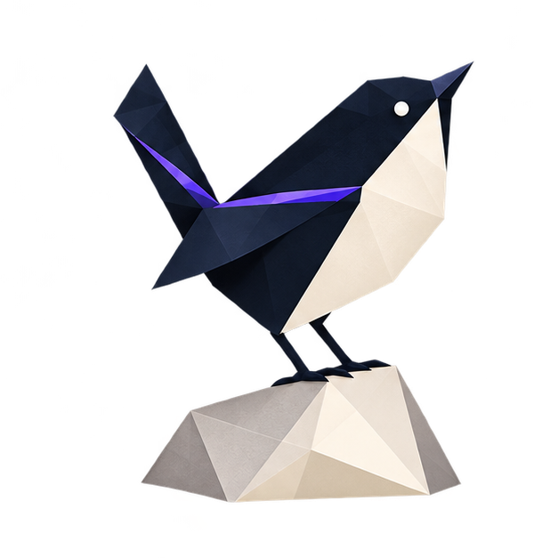
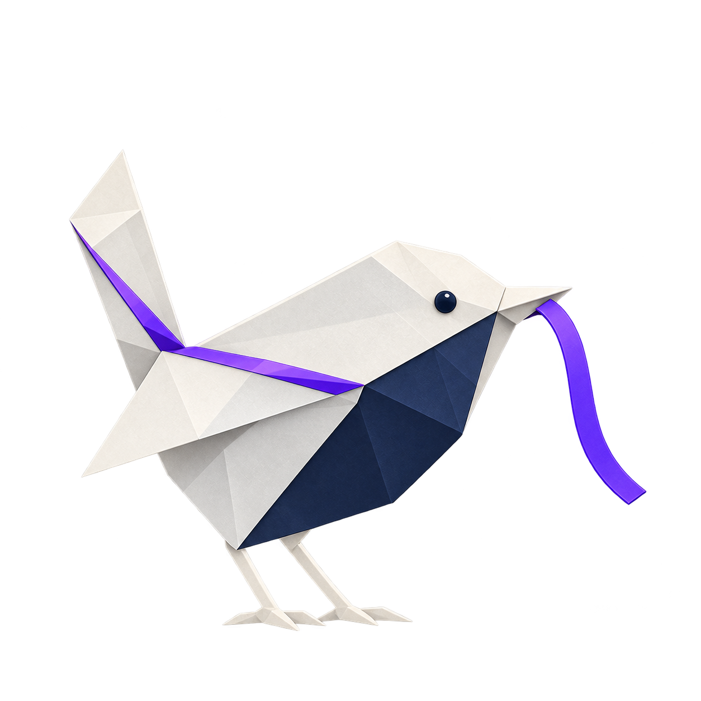

01
A choice goes unnoticed
An agent picks a data store or wraps an old API. The code works, but nobody agreed that this was the architecture.

Augmented Workflow keeps intent, decisions, corrections, and unfinished work close to the code. Give the next person or agent the reasons behind the work, a useful place to resume, and a clear account of what still needs checking.
See how product, design, and engineering use AWAn implementation can run and pass its tests while leaving the next contributor unsure why it was built that way. These are the gaps AW helps a team make visible.
An agent picks a data store or wraps an old API. The code works, but nobody agreed that this was the architecture.
You explain the same constraint again because the last conversation never became useful project guidance.
The next contributor must guess what is finished, what was rejected, and which checks have actually run.
A review record exists. Whether it is credible, current, and relevant still needs attention.
Specs, decisions, and learnings preserve different parts of the work. They help people rebuild an understanding of the system; they cannot contain every intention or replace someone accountable for the next decision.
Save the reason, where it applies, and what someone should check before relying on it.
State what the product should do now and make change visible when that intent moves.
Preserve the reasoning behind consequential choices, including what later evidence may supersede.
Carry forward corrections and patterns that would otherwise be rediscovered in another session.
Make the basis for confidence inspectable when behavior, assumptions, or evidence are challenged.
Agents widen who can contribute to software work. They also make weak context visible quickly. The practice asks every contributor to show their basis, name uncertainty, and leave the next contributor with more than a result.
Bring experience, judgment, and accountability for the consequences of a change.
Can traverse the same evidence, surface gaps, and contribute work that can be inspected and reviewed.
Four essays follow the problem from engineering judgment to the practical work of checks, corrections, and handovers.
Keep a person involved in the decisions that shape the system.
Ask what a check establishes, where its evidence comes from, and what it leaves open.
Save the cause, scope, and useful next check behind a repeated correction.
Leave a handover that separates agreed intent, unfinished work, and unverified assumptions.

Explain the goal, the current state, the choices already made, and the next useful check. Let the next session start by checking that account against the checkout, rather than reconstructing the conversation.
Read the technical model